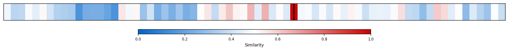
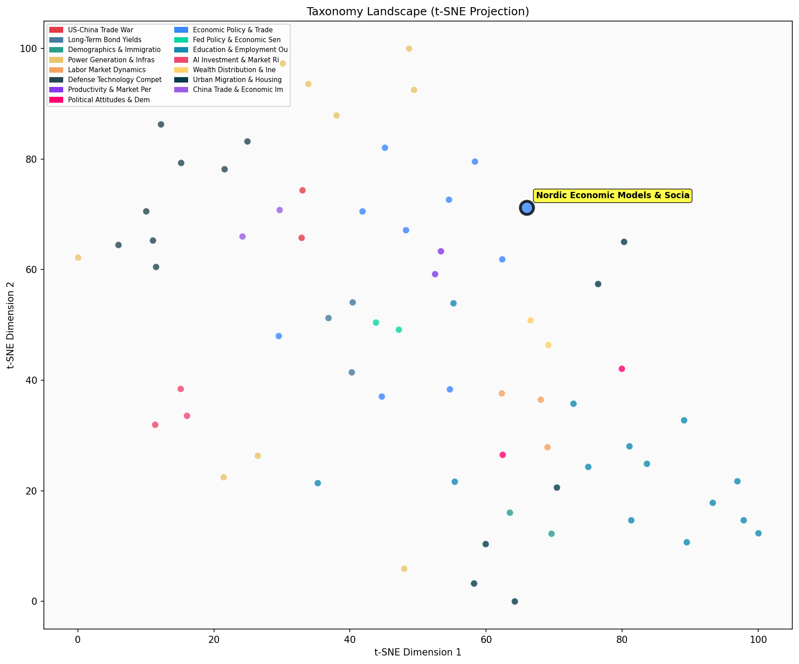

Description
This subcluster examines Nordic economic models through ideological and historical lenses, analyzing whether Scandinavian countries represent successful socialism or market-oriented welfare states. Articles feature policy institute perspectives, particularly from AEI researchers, alongside historical analyses of Sweden's 1990s crisis and Finland's capitalist framework. The focus centers on debating socialism versus capitalism using Nordic case studies, trust metrics, and poverty reduction data. Unlike sibling subclusters emphasizing performance metrics or specific policy mechanisms, this group prioritizes ideological classification and lessons for broader economic system design, often contrasting Nordic experiences with U.S. policy debates.
Similarity to All 70 Subclusters
Each cell represents a subcluster. Color intensity shows similarity (blue=low, red=high). Black line marks current subcluster position.
Relationship to Primary Clusters
Average similarity to each of the 15 primary clusters. Larger area = stronger relationship to that cluster.
Taxonomy Landscape
All 70 subclusters positioned by similarity (t-SNE). Current subcluster highlighted with label. Click to enlarge.
Network Connections
Current subcluster at center, connected to related subclusters. Line thickness = similarity strength.
Most Representative Articles
-
1. Sweden's economic history offers critical insights for the U.S. Despite perceptions, Sweden is not s
-
2. Scandinavia's experience with socialism in the 1970s & 1980s highlights the economic pitfalls of hig
-
3. Sweden's market reforms: Govt spend cut 70% to <50% GDP, debt 80% to 41%, corp tax -6pts to 22%. Res
-
4. Sweden reforms: Public spending cut from 70% to <50% GDP, debt from 80% to 41%. Corp tax -6pts to 22
-
5. @JamesPethokoukis, American Enterprise Institute: Similar wealth concentration figures exist in Swed
Edge Cases (Boundary Articles)
-
1. Economic independence, defined as control over productive resources, has historically led to politicThis article is borderline because while it touches on the relationship between economic systems and political freedom (relevant to socialist analysis), it focuses on historical transitions from feudalism to free market yeomanry rather than examining Nordic economic models or contemporary socialist systems. The content is more aligned with general economic-political theory and historical market development than with the specific ideological analysis of Scandinavian welfare capitalism versus socialism that defines this cluster.
-
2. A socialist society inevitably results in a powerful elite whose wealth is based on political succesThis article is borderline for the "Nordic Economic Models & Socialist Analysis" cluster because while it offers a critique of socialist societies, it makes a broad ideological statement about socialism in general rather than specifically analyzing Nordic countries or their economic models. The content focuses more on wealth concentration among political elites in socialist systems, which aligns better with the alternative cluster about "Top Percentile Wealth Concentration Trends."
-
3. Socialism’s future may lie in revisiting its roots, emphasizing radical democracy & social ownershipThis article is borderline because while it discusses socialist theory and democratic principles that relate to Nordic model analysis, it focuses on abstract ideological concepts about socialism's future rather than specifically examining Nordic countries' economic systems or evaluating whether Scandinavian welfare states constitute successful socialism. The content is more about theoretical socialist principles than the concrete policy analysis and historical assessment of Nordic economic models that defines the cluster.
Original Dendrogram